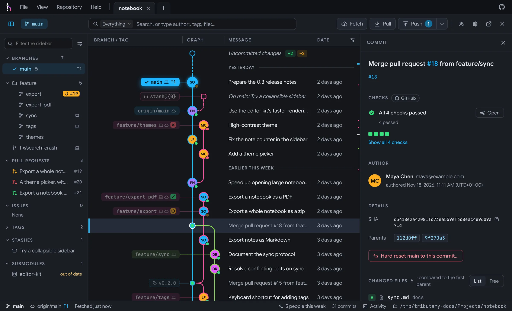
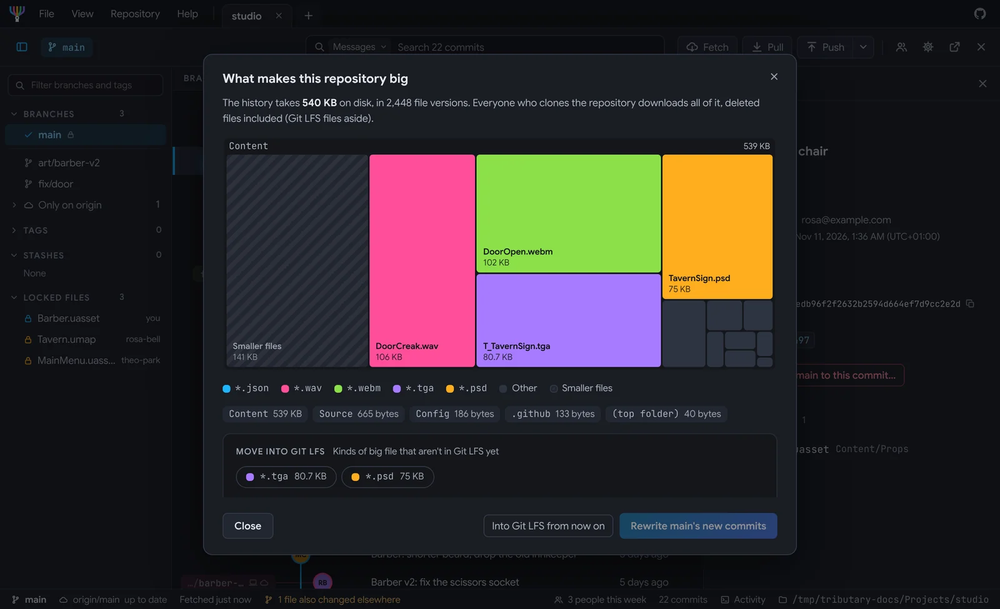

Git, for the
whole team.
A fast, friendly git client with a commit graph that's a pleasure to read, Undo for almost everything and pull requests in the app. With first-class big files too: Git LFS, locks, and art you can see in a diff.

A commit graph that's a pleasure to read.
Every branch gets its own lane and colour, with smooth bends where branches split and join. Point at a branch and its lane lights up while the rest fade.
Point at a lane, a commit or a branch's label.
- Labels for everything. Branches, remote branches, tags and stashes, each in its lane's colour.
- Drag to cherry-pick. Drop a commit on a branch's label to copy it there.
- Smooth with long histories. Only the rows on screen are drawn.
Make it yours.
Pick the graph's colours, how its lines bend and how checks show on its dots. Choose an accent colour, and light or dark. The window follows every click.
Undo for almost everything.
Rebased the wrong branch? Deleted one too soon? Press Undo. Tributary keeps a list of what you did, with Undo on each.
- Rebases, merges, resets and deletes. All of them can be taken back.
- Discarded changes come back. Even the ones you never committed.
- Backups before rewrites. Branches are saved before they change.
See what changed in your art.
Pictures show up as pictures, not as binary files. Swipe between two versions, lay one over the other, or light up the pixels that changed.
- PSD, TGA, DDS, EXR, PNG and more. Plus SVGs, Blender and Unreal thumbnails.
- Models, sounds and video. Models in two views that turn together, sounds as waveforms.
Drag either view to turn both.
Big files, done properly.
Git LFS is built in. Big files download side by side, with the time left and a check for disk space first. Locks show who's working on what, so two people never paint the same texture.
Enough space: 2.4 GB needed, 212 GB free.

Pull requests and checks, in the app.
Reviews, checks and comments sit next to your code. Each check is a stream that flows into one river, in the colour of how they went. Run a failed one again, then merge. On GitHub and GitLab.
Checks
- Why a check failed. The step that failed and the end of its log.
- Reviewers at a glance. Who approved, and who asked for changes.
- Merge when it's green. With a merge commit, a squash or a rebase.
Search everything.
One box finds commit messages, branches, files and code. Results show up as you type, grouped by kind.
- Type, then press Enter. Go straight to the commit, the branch or the line.
- Go to any commit. By its id, a branch, a tag or a date.
Try it: type in the box, for example or .
Simple mode for artists and designers.
Not everyone wants a graph. Simple mode shows what matters: get the latest, see your changes, and submit them. One switch, and back again whenever you like.
Get latest
1 update from Rosa Bell. Checked just now.
The team
- Rosa Bell is working on Tavern.umap
- Theo Park is working on MainMenu.uasset
Flip the switch at the top of the window.
Every branch leads here.
Free and open source, with no ads and no tracking. Tributary updates itself once it's installed. It needs git, and Git LFS for repositories that use it.
Made by one person in their spare time. Star it on GitHub if you like it.